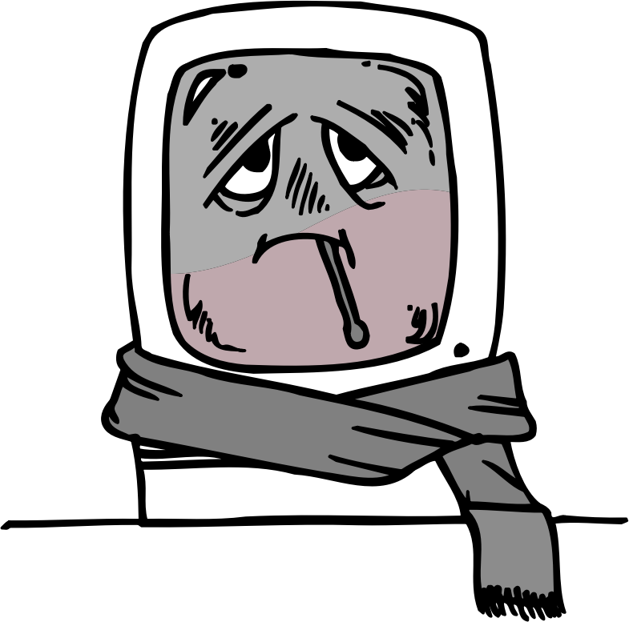
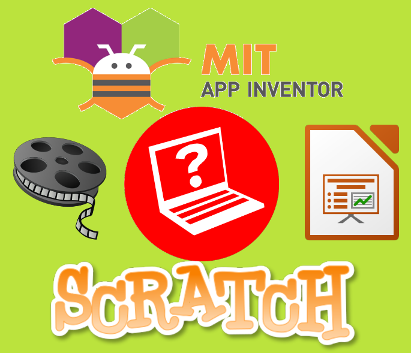

Conocida en inglés como darknet es la parte de Internet inaccesible para los buscadores tradicionales que se caracteriza por el anonimato de la identidad de sus miembros y del origen y el destino de la transferencia de información que realizan.
Ejemplo
Me han robado mis datos bancarios y los van a vender en la Internet oscura a algún ciberdelincuente.
Malware

Definición
Palabra que proviene de la unión de los términos en inglés "malicious" y "software". Es todo programa informático creado para realizar acciones dañinas (problemas de funcionamiento o robos de información) sobre un equipo informático de forma intencionada y sin consentimiento de los usuarios.
Ejemplo
Mi ordenador va mal, creo que está infectado por algún tipo de malware.
Propiedad intelectual
Definición
Conjunto de derechos que tiene el autor de cualquier creación procedente de la inteligencia humana.
Ejemplo
Para usar una imagen en un trabajo debo respetar su propiedad intelectual.
1. Un magnífico consejero
Como ya sabes, por propia experiencia, el alumnado de 1º de ESO, muchas veces necesita ayuda cuando se incorpora al Instituto.
Las nuevas tecnologías están cada vez más extendidas. Eso hace de la ciberseguridad algo tan importante que todos deberían dominarla adecuadamente ya que el mundo digital en el que vivimos está plagado de riesgos que hay que saber identificar y combatir.
Quizás el alumnado de 1º de ESO aún no tenga los conocimientos apropiados y agradecerá que alguien les preste la ayuda que necesitan para ponerse al día.
¿Quieres ser tú ese alguien y ganarte su respeto y admiración?
Pues prepara una guía práctica ilustrada de cirberseguridad y propiedad intelectual en el soporte digital que prefieras:
Hacer un programa de Scratch.
Crear una aplicación móvil con App Inventor.
Desarrollar un vídeotutorial.
Elaborar una presentación de diapositivas.
Tú eliges lo que más te atrae. Pero piensa que deberían tenerla a mano cuando estén usando sus dispositivos electrónicos y queden expuestos a los riesgos que ello conlleva.
¡Ánimo! Seguro que harás un magnífico trabajo.

Definición
Conjunto de derechos que tiene el autor de cualquier creación procedente de la inteligencia humana.
Ejemplo
Para usar una imagen en un trabajo debo respetar su propiedad intelectual.
2. Es noticia
La ciberseguridad y la propiedad intelectual están en el corazón de muchas noticias de actualidad, algunas hasta curiosas, que te van a mostrar ciertos aspectos interesantes de cara a que empieces a concienciarte de la importancia y utilidad de lo que vas a ver a lo largo del desarrollo de este recurso.
A continuación tienes una pequeñísima selección de noticias.
Otro ciberataque
Titular: "El aviso de Iberdrola tras el ciberataque que afectó a 1,3 millones de clientes".
En este enlace puedes encontrar la noticia completa.
Por menos de cinco euros
Titular: "¿Tiene cinco euros? Puede entrar al internet oscuro a comprar un virus (y le sobrará dinero)".
En este enlace puedes encontrar la noticia completa.
¿Te parece poco?
Titular: "50.000 nuevos virus cada día: cuánto malware sale en la Red".
En este enlace puedes encontrar la noticia completa.
¿Por qué me vigilan, si no soy nadie?
En este vídeo también se hace referencia a alguna noticia de interés. Dura unos nueve minutos, pero no tiene desperdicio.
Niñas amenazadas
Titular: "La Guardia Civil detiene a un individuo por ciberacosar a 23 niñas menores".
En este enlace puedes encontrar la noticia completa.
Ser joven es arriesgado
Titular: "Las apuestas o el ciberacoso: los riesgos de la red para los jóvenes".
En este enlace puedes encontrar la noticia completa.
Estas son las consecuencias
Titular: "La madre de la joven que se suicidó en Jaén al sufrir ciberacoso: Le machacaron literalmente la vida".
En este enlace puedes encontrar la noticia completa.
Un caso grave
Titular: "Daniel, en terapia por adicción a Internet: 20 horas de ordenador me parecían media hora".
En este enlace puedes encontrar la noticia completa.
¡Lo que faltaba!
Titular: "El Hudson Yards reclamará los derechos de fotos y vídeos que hagan los turistas".
En este enlace puedes encontrar la noticia completa.
El que la hace, la paga
Titular: "Condenan a «El Hormiguero» por usar sin permiso una obra de una artista valenciana".
En este enlace puedes encontrar la noticia completa.
Definición
Conocida en inglés como darknet es la parte de Internet inaccesible para los buscadores tradicionales que se caracteriza por el anonimato de la identidad de sus miembros y del origen y el destino de la transferencia de información que realizan.
Ejemplo
Me han robado mis datos bancarios y los van a vender en la Internet oscura a algún ciberdelincuente.
Definición
Palabra que proviene de la unión de los términos en inglés "malicious" y "software". Es todo programa informático creado para realizar acciones dañinas (problemas de funcionamiento o robos de información) sobre un equipo informático de forma intencionada y sin consentimiento de los usuarios.
Ejemplo
Mi ordenador va mal, creo que está infectado por algún tipo de malware.
3. ¿Qué vas a aprender mientras haces la guía?
Qué riesgos existen para tus dispositivos informáticos y cómo activar la seguridad necesaria para protegerte de esas amenazas.
Qué es el malware y cómo evitarlo.
Qué amenazas puedes encontrar en la Red y cómo puedes luchar contra ellas.
Cómo ser mejor persona en la Red.
De qué va lo de la propiedad intelectual y los derechos de autor.
Distinguir claramente los materiales libres de los que tienen algún derecho limitado.
Cómo puedes licenciar libremente los materiales que tú hagas.